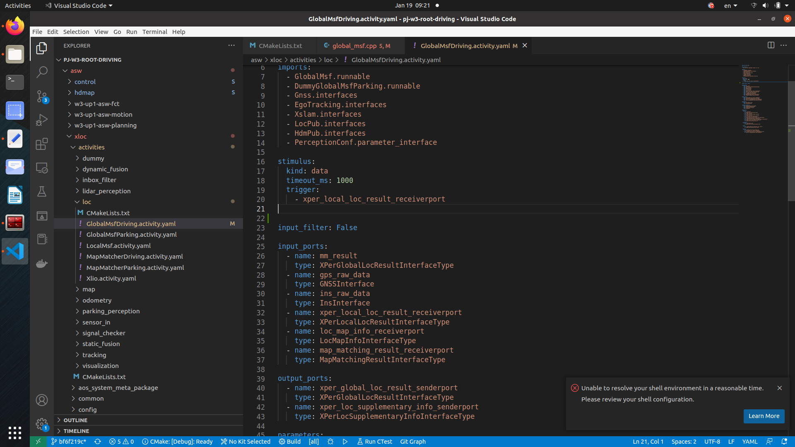

Compilation and deployment -Help
One group docking person
1 architecture:
parking Wang Albert
driving WEN Vincent
2 persim: YANG Jiyu
3 netcom: ZHENG Shunjie
4 V&V: Xia Sam
Second compilation deployment:
1 persim
91 server path: /per_demo/ilk2szh/per_sim_0_5_0/persim_scripts_0.5.0
Run the script sh ./scripts/run_with_docker.sh
2 pj_w3_root
Driving Branch: Feature/CNWVIII-29279-MCH-Driving-Branch-WITHOUT-WR-PART
Compile commands: ./root_build.sh -D XLOCSIM
91 server path:/per_demo/Ilk2szh/xLOC_PROJECT/PJ-W3-ROOT-DRIVING-NOWR/PJ_W3-ROOT
Running script CD BUILD-XLOCSIM-OSD6-RELWITHDEBINFO && CP YAAAC_CODEGEN/CarMA_0_22_DEPLOY/XLOCSIM/Start_Scripts/Start_roudi_combined.sh.
../scripts/run_script_of_release_package/start_run.sh
Three data path:
/per_demo/pc_dasy_data
Four debugging experience
1 Why does GlobalMSFDRiving did not output?

Answer: You can see that this Activity is driven by data through the corresponding Activity.yaml file. When there is no local_loc_result output, the Global MSF UPDATE will not be performed, so the Global MSF UPDATE is not executed.
It can be used for reference: If the Activity does not output, you can see what it is driven by it. If it is data -driven, see if there is an output in the upstream. If you test the signal, you can temporarily change it to the time -driven driver.Writing in .Activity.yaml, Stimulus Kind: CyClic
2 AOS log -oriented: Print out the AOS log of Activity you care about.
2.1 Script: /per_demo/fau2sgh/generate_log.sh
2.2 Manual modification method, take GlobalMSFDRiving as an example:
Original content:
bin/GlobalMsfDriving_activity \
-m yaaac_codegen/carma_0_22_deploy/XlocSim/manifests/roudi_combined_global_msf.inst \
-d yaaac_codegen/carma_0_22_deploy/XlocSim/manifests/global_msf_deploy \
-p yaaac_parameter_instances \
$RECOMPUTE_PLAYER_MODE -l $RECOMPUTE_LOG_LEVEL -s $LOG_SINK&
change into:
bin/GlobalMsfDriving_activity \
-m yaaac_codegen/carma_0_22_deploy/XlocSim/manifests/roudi_combined_global_msf.inst \
-d yaaac_codegen/carma_0_22_deploy/XlocSim/manifests/global_msf_deploy \
-p yaaac_parameter_instances \
$RECOMPUTE_PLAYER_MODE -l $RECOMPUTE_LOG_LEVEL -s $LOG_SINK 2>&1 | tee GlobalMsfDriving.log&